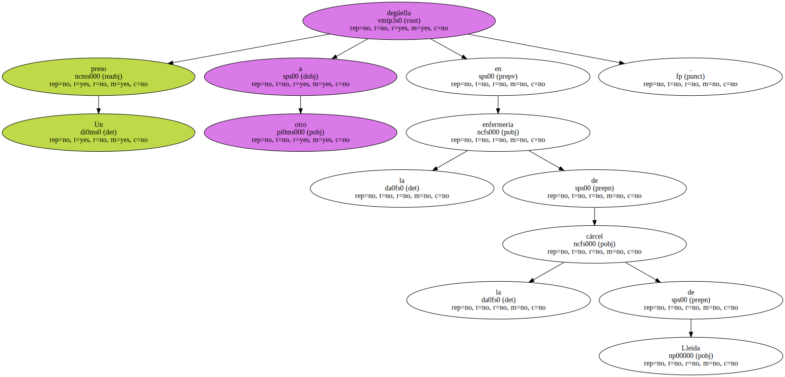
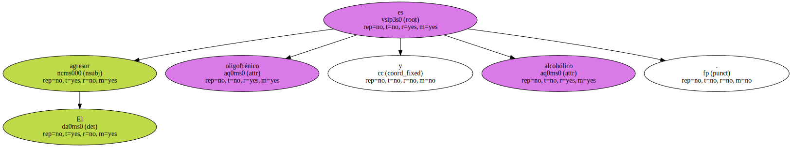
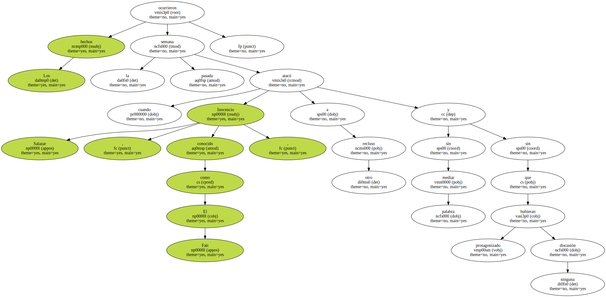

Un preso degüella a otro en la enfermería de la cárcel de Lleida.
El agresor es oligofrénico y alcohólico.
La víctima , pese a la gravedad de las heridas , consiguió sobrevivir.

Los hechos ocurrieron la semana pasada cuando Inocencio Salazar , conocido como El Fati , atacó a otro recluso sin mediar palabra y sin que hubieran protagonizado ninguna discusión.
El herido , que fue atendido en el mismo centro , tenía un corte de 12 centímetros en el cuello.